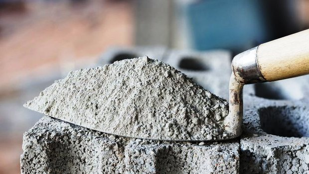
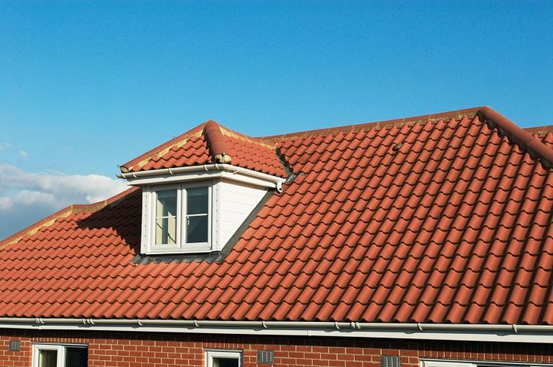

Inspirasi Warna Cat Dinding yang Cocok untuk Ruang dengan Cahaya Alami yang Melimpah
1. Tips memilih semen
Ada beberapa cara untuk mengenali semen yang berkualitas, di antaranya adalah sebagai berikut :
Ciri ciri semen yang berkualitas baik adalah semen yang seluruh butirannya bisa terurai dan nampak lembut seperti debu, serta tidak menggumpal. Namun, jika semen tersebut mulai menggumpal dan terlihat kasar, ia sudah pasti tidak berkualitas baik.Apalagi jika sudah terasa keras dan kondisinya sudah membatu seperti kerikil. Selain itu, pastikan semen yang kamu pilih harus bermerek terkenal karena semen yang seperti itu biasanya sering digunakan oleh para kontraktor bangunan.
2. Tips memilih pasir
Ciri ciri pasir yang bagus adalah bersih dari kandungan lumpur. Hal ini harus diperhatikan karena jika pasir masih mengandung lumpur akan berdampak pada pemborosan pemakaian bahan bangunan lainnya, yaitu semen pada saat sedang melakukan pengecoran beton.
3. Tips Memilih Batu Bata Merah
Dibandingkan batako, bahan bangunan rumah yang satu ini memang memiliki struktur yang lebih kokoh dan kuat. Keunggulan dari batu bata merah adalah sifatnya yang dapat menyerap panas dengan baik sehingga rumah akan terasa lebih sejuk. Adapun ciri ciri batu bata merah yang baik memiliki tekstur yang keras, berukuran sedang, dan tidak mudah retak atau pecah.
4. Tips memilih kayu
Kayu adalah salah satu material yang sangat penting dalam pembangunan rumah. Untuk memilih kayu terbaik, sebaiknya gunakan kayu yang memiliki kadar air di bawah kisaran 20%. Kayu dengan kriteria tersebut tentunya akan menghindarkan pelapukan di kemudian hari.
5. Tips memilih Genting
genting dapat menyerap panas matahari dengan optimal sehingga rumah terasa lebih adem. Jika kamu ingin membeli genting dengan kualitas terbaik, genting keramik merupakan salah satu varian yang harus diplih karena ketahanannya yang sudah teruji. Ketahanan ini sendiri diperoleh melalui pembakaran dalam suhu yang sangat tinggi.
